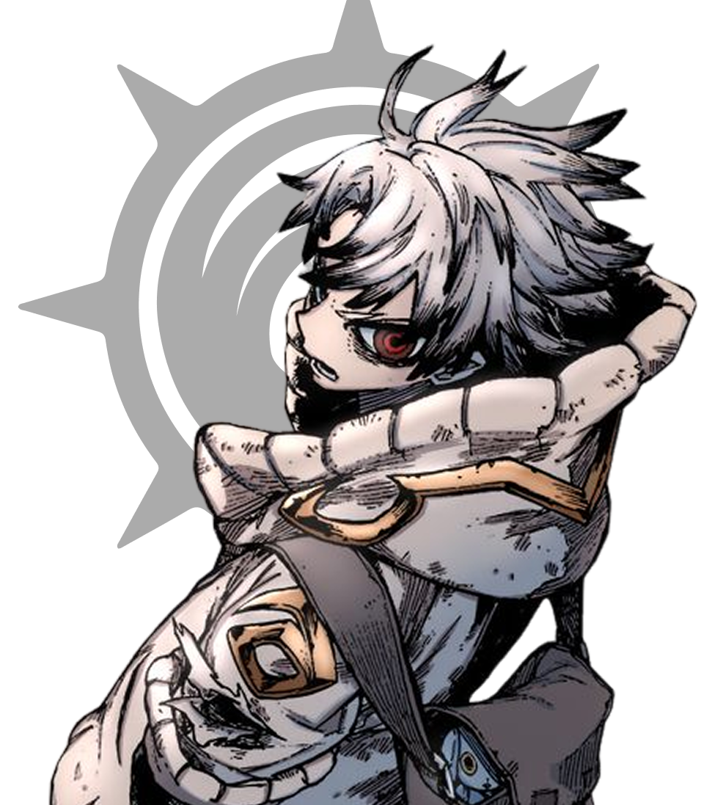
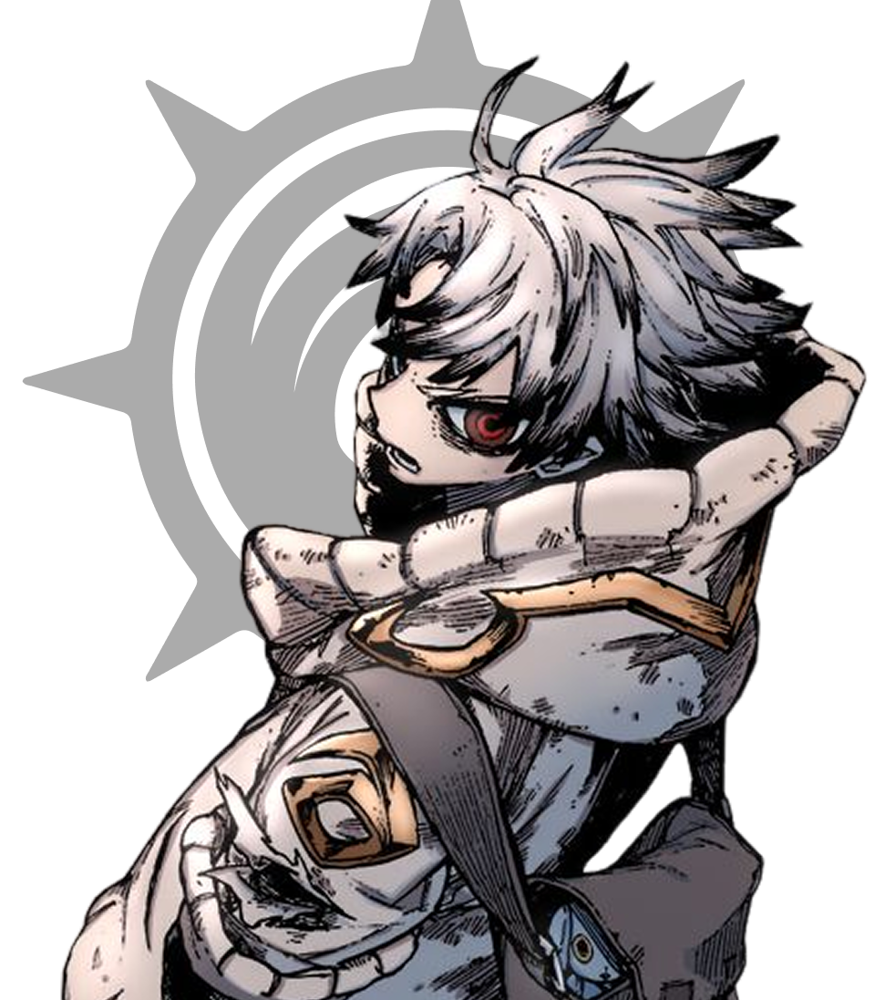

A Rede Social Chokers: Conexões que Transformam Inspirada no mangá Gachiakuta, nossa rede social digitaliza os icônicos "chokers" da obra, criando um espaço dedicado a fãs de animes e jogos. Aqui, você encontra uma comunidade vibrante para discutir sagas, compartilhar experiências e formar amizades genuínas com pessoas que compartilham suas paixões.
Por que isso importa? Como fã, animes como Gachiakuta e jogos colaborativos foram minha ponte para amizades duradouras. Em um mundo digital, ter um espaço inclusivo combate a solidão e fomenta pertencimento — algo vital para saúde mental. Além disso, ao unir diversidade cultural em torno da arte japonesa e do gaming, reduzimos desigualdades e construímos comunidades sustentáveis.
Ao longo da vida, tive o privilégio de conhecer pessoas incríveis — amizades que surgiram de formas simples, mas deixaram marcas profundas. Inspirado na ideia da Rede Social Chokers e em universos como Gachiakuta, percebo o quanto esses laços moldaram quem sou. Como nos animes e jogos que tanto amamos, cada amizade foi como um choker simbólico: um elo que carrego comigo. Por que isso importa? Porque amizades verdadeiras são abrigo nos dias difíceis e festa nos dias bons. Foram nas conversas sobre sagas, nas madrugadas jogando, que aprendi sobre empatia, confiança e diversidade.
Agradeço de coração a cada pessoa que fez parte da minha jornada — seja na escola, em rapidas conversar ou nos mundos virtuais. Vocês me ensinaram que é possível encontrar pertencimento mesmo no caos, e que respeito e carinho criam espaços seguros. Em um mundo cada vez mais digital, lembrar do valor das conexões humanas é essencial. Obrigado por cada riso, apoio e silêncio compreendido. Que continuemos construindo comunidades onde a amizade seja sempre um elo transformador.